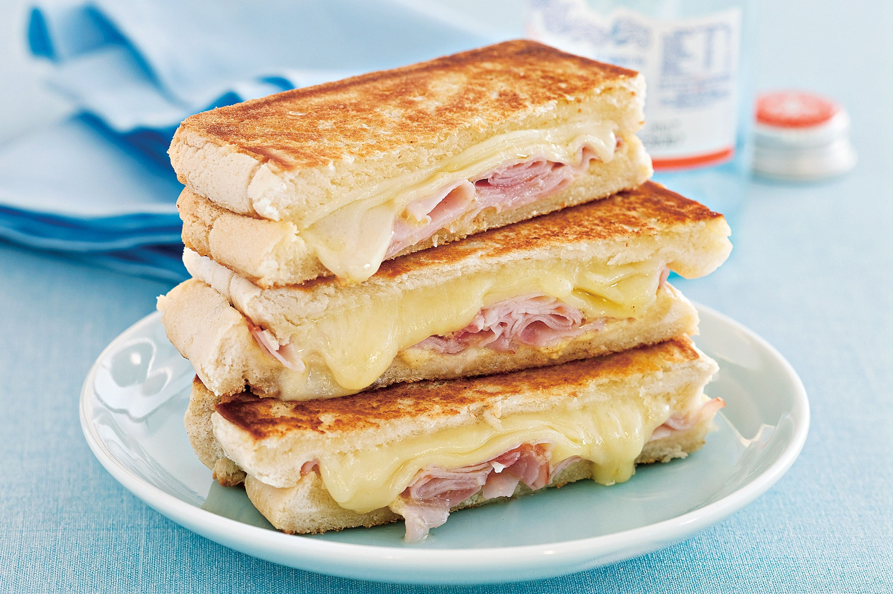

Sandwich

Description
Probably the easiest sandwich you can make,
but a proven classic for when you are not
feeling very inspired in the kitchen
Ingredients
Steps
- Cut ham and tuna into fine slices
- Cut 2 portions of bread and toast them
- Put it all together